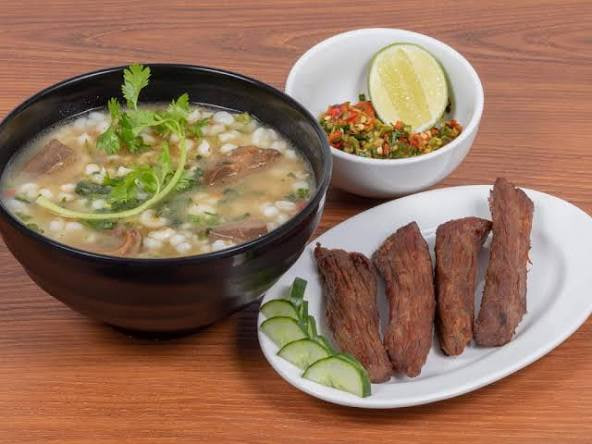

Sabuti

Description
Sabuti is a traditional dish from the Chin people in Myanmar. The word "sa" means meat and "buti" is for corn broth. It is said to be the food every Chin tribe eats heartily and I assure you that was the case when I had the dish for the first time.
Ingredients
- Meat (pork or beef)
- Corn
- A small amount of finely chopped ginger
- Salt
- Water
- Coriander
- Green chilli and MSG
- Lime
Steps
- Coarsely grind the corn to crack the kernels without turning them into powder.
- Chop the meat of your choice into small pieces , not too large and not finely minced.
- In a pot, combine the meat, corn , ginger and water into boil until tender.
- Once the meat is tender, add salt to taste.
- Garnish with coriander, minced green chilli (depends on your spice level), MSG and a squeeze of lime before serving it hot.
There! Enjoy your delicious Sabuti. It pairs especially well with deep-fried pork or beef using lean meat.
Back to Home